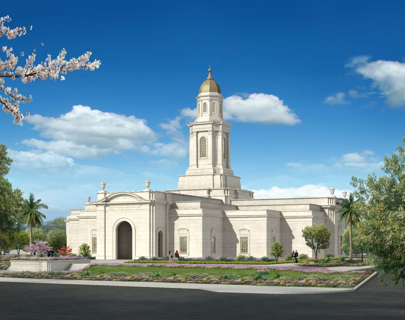

Featured Temples

Bacolod, Philippines Temple
 McAllen, Texas Temple
McAllen, Texas Temple
 Tegucigalpa, Honduras Temple
Quetzaltenango, Guatemala Temple
Tegucigalpa, Honduras Temple
Quetzaltenango, Guatemala Temple
 San Diego, California Temple
San Diego, California Temple
 Abidjan, Ivory Coast Temple
Abidjan, Ivory Coast Temple
 Coban, Guatemala Temple
Coban, Guatemala Temple
 Ciudad Juarez, Mexico Temple
Ciudad Juarez, Mexico Temple
 Oakland, California, USA Temple
Oakland, California, USA Temple